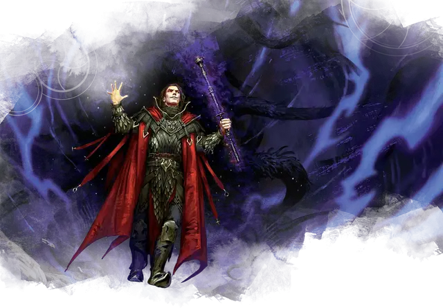

Колдун Великого Древнего
Warlock of the Great Old One
Средний Гуманоид (Любая раса), любое мировоззрение

Класс Доспеха 12 (15 с доспехами мага)
Хиты 91 (14к8 + 28)
Скорость 30 футов
| мод | спас | ||
|---|---|---|---|
| СИЛ | 9 | −1 | −1 |
| ЛОВ | 14 | +2 | +2 |
| ТЕЛ | 15 | +2 | +2 |
| мод | спас | ||
|---|---|---|---|
| ИНТ | 12 | +1 | +1 |
| МДР | 12 | +1 | +4 |
| ХАР | 18 | +4 | +7 |
Навыки История +4, Магия +4
Сопротивление урону психическая энергия
Чувства тёмное зрение 60 футов, пассивное Восприятие 11
Языки любые два языка, Телепатия 30 фт.
Опасность 6 (2300 опыта)
Бонус мастерства +3
Среда обитания Горы, Город, Подземье, Пустыня, Холмы
Особенности
Врождённое колдовство. Базовой характеристикой колдуна является Харизма. Он может врождённой магией накладывать следующие заклинания (Сл спасброска от заклинаний 15) без материальных компонентов:
• Неограниченно: обнаружение магии [detect magic], прыжок [jump], левитация [levitate], доспехи мага [mage armor] (только на себя), разговор с мёртвыми [speak with dead].
• 1/день каждое: магические врата [arcane gate], истинное зрение [true seeing].
Использование заклинаний. . Колдун является заклинателем 14-го уровня. Его базовой характеристикой является Харизма (Сл спасброска от заклинания 15, +7 к попаданию атаками заклинаниями). Он восстанавливает свои ячейки заклинаний после короткого или продолжительного отдыха. Он знает следующие заклинания колдуна:
• Заговоры (неограниченно): леденящее прикосновение [chill touch], мистический заряд [eldritch blast], указание [guidance], волшебная рука [mage hand], малая иллюзия [minor illusion], фокусы [prestidigitation], электрошок [shocking grasp].
• 1–5 уровни (3 ячейки 5-го уровня): доспех Агатиса [armor of Agathys], руки Хадара [arms of Hadar], корона безумия [crown of madness], подсматривание [clairvoyance], связь с иным миром [contact other plane], обнаружение мыслей [detect thoughts], переносящая дверь [dimension door], диссонирующий шёпот [dissonant whisper], подчинение зверя [dominate beast], телекинез [telekinesis], прикосновение вампира [vampiric touch].
Шепчущая аура. В начале каждого хода колдуна, каждое существо по его выбору в пределах 5 футов от него должно преуспеть в спасброске Мудрости Сл 15 или получит 10 (3к6) урона психической энергией, если колдун не является недееспособным.
Действия
Кинжал. . Рукопашная или дальнобойная атака оружием: +5 к попаданию, досягаемость 5 футов или дистанция 20/60 футов, одна цель. Попадание: Колющий урон 4 (1к4 + 2).
Описание
Колдуны Великого Древнего получают свои силы от магического договора, заключенного со сверхъестественной сущностью из странных и отдаленных сфер существования. Некоторые из этих колдунов связаны с культистами этих сущностей, таких как аберрации, которые разделяют их цели, и все же другие колдуны Великого Древнего – эксперты в выкорчевывании безумия и порока, вдохновляемые странными существами из–за звезд.